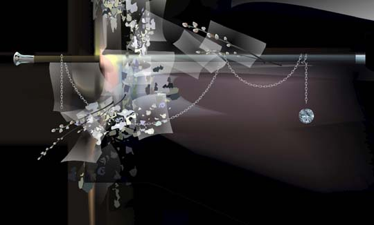
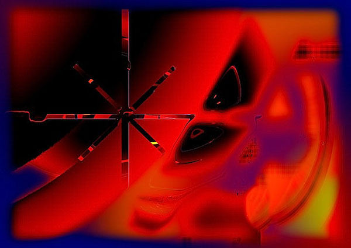

IMAGES OF THE DAY 72
06/11/2023 - 06/20/2023
Processed Photography
Paper Leaf
by Colin Aiken
06/11/2023
Click image to access artist's full exhibit

3D Rendered Art
Apocalypse Dom
by Stefan Haberkorn
06/12/2023
Click image to access artist's full exhibit

Surreal
Lost Secrets
by Karl-Ludwig Leiter
06/13/2023
Click image to access artist's full exhibit
Surreal
Contamination among the Arts
Adolescent Mercury
by Alessandro Bavari
06/14/2023
Click image to access artist's full exhibit

Mixed Technique
Computer Graphics
Wall
by Afanassy Pud
06/15/2023
Click image to access artist's full exhibit

3D Rendered Art
Mental Landscape
Venus Comb
by Michael Frank
06/16/2023
Click image to access artist's full exhibit

Vector Art 
Mixed Technique
Cane, Chain and Stone
by Wil Dawson
06/17/2023
Click image to access artist's full exhibit
Abstract Art 
Algorithmic
Asterisk
by Tom Hubbard
06/18/2023
Click image to access artist's full exhibit
Mixed Technique
Abstract Digital Art: Bryce and Photoshop
Urban Illuminations on my Wall
by Angel Estevez
06/19/2023
Click image to access artist's full exhibit

Mixed Technique
Cyber Tools and Effects
Untitled #10
by Romesh Mistry
06/20/2023
Click image to access artist's full exhibit

BACK TO IMAGES OF THE DAY 71
NEXT